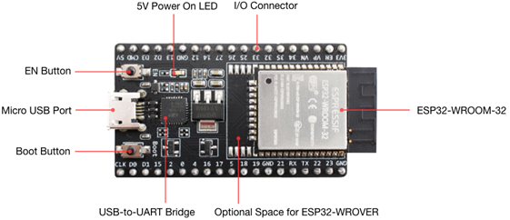

Un microcontrolador (MCU) es un circuito integrado programable que contiene un procesador, memoria y periféricos de entrada/salida en un solo chip. Está diseñado para realizar tareas específicas dentro de sistemas embebidos y es el núcleo de muchos dispositivos electrónicos modernos.
El ESP32 como microcontrolador
En este curso utilizaremos el ESP32, un MCU potente que integra WiFi, Bluetooth y Bluetooth Low Energy (BLE), orientado a una amplia gama de aplicaciones, desde redes de sensores de baja potencia hasta tareas exigentes como codificación de voz o aplicaciones IoT.
Nuestro entrenador se basa en la placa de desarrollo ESP32-WROOM-32 DevKit, que facilita la conexión directa de periféricos mediante cables y permite programar fácilmente el dispositivo.
Componentes clave del ESP32-WROOM-32 DevKit

- ESP32-WROOM-32: módulo principal que integra el microcontrolador y sus funciones básicas.
- EN: botón de reinicio (Reset).
- BOOT: botón para entrar en modo de descarga de firmware.
- USB-to-UART Bridge: puente para comunicación USB con tasas de hasta 3 Mbps.
- Puerto Micro USB: interfaz para alimentación y comunicación con el PC.
- LED de encendido (5V Power On): indica alimentación desde USB o fuente externa de 5V.
- Entradas/Salidas (I/O): pines reasignados desde el módulo para control de periféricos.
El ESP32 también cuenta con múltiples periféricos integrados, como:
- Hasta 34 pines GPIO configurables.
- Conversores analógico-digital (ADC) y digital-analógico (DAC).
- Sensores táctiles capacitivos.
- Interfaz PWM para control de motores y brillo de LEDs.
- Módulos de comunicación como UART, SPI, I2C, CAN y más.
Ventajas del ESP32
El ESP32 presenta una serie de ventajas que lo hacen atractivo para aplicaciones:
- Conectividad integrada: Wi-Fi y Bluetooth en un solo chip.
- Procesador potente: con capacidad para ejecutar múltiples tareas o controlar dispositivos en tiempo real.
- Bajo consumo energético: cuenta con varios modos de ahorro de energía, incluyendo deep sleep.
- Versatilidad de entradas y salidas: gran número de pines, compatibilidad con múltiples protocolos de comunicación.
- Amplia documentación y comunidad: soporte disponible en múltiples lenguajes y plataformas.
- Costo accesible: relación calidad-precio superior a muchas alternativas comerciales.